Formation System v2
Introduction
The Formation System allows you to easily add formations to your game. Make AI characters follow you in formation, make groups move in formation, or use for any situation where you need characters to move relative to each other such as cut-scenes or scripted events.
Version 2 of the Formation System has been completely rewritten to accomodate multiplayer and add additional requested features.
Example Project
The example project shows some example ways in which the system can be used. This is by no means an exhaustive list. Let your imagination decide your limits.
Link: Example Project
Formation Tool
An open source tool is provided to create custom formations, and export JSON that can be easily loaded by the Formation System.
Link: Formations Tool
Video Tutorials
Additional video tutorials will be uploaded to CodeSquirl YouTube channel.
Getting Started
Enable the Plugin
1. In the Unreal Editor, click Edit > Plugins

2. Search for the Formation System plugin in the Plugins Browser.

3. Check the Enabled box to enable the plugin.
Add the C++ Module
If you have a C++ project and want to interact with the Formation System from code, add the FormationSystem module to your .build.cs file.
PublicDependencyModuleNames.AddRange(new string[] { "Core", "CoreUObject", "Engine", "InputCore", "HeadMountedDisplay", "FormationSystem" });
PrivateIncludePathModuleNames.AddRange(new string[] { "FormationSystem" });
Enjoy!
Now you're ready to use the Formation System. Let your imagination run wild.
QuickStart
Using the Formation System is as simple as adding the Formation Component to any actors that you want to be able to add to formations, and adding the Formation Manager to your level.
Formation Component
The Formation Component is main interface for interacting with the Formation System. It allows you to create, join and leave groups; add and remove members from groups; and switch the formation that a group uses.
Formation Manager
The Formation Manager keeps track of formations and formation groups and allows you to set options that affect how the Formation System works.
Example Workflow
Below is a short description of a typical workflow to create formations and get them into your game.
- Create and import formations
- Add a Formation Manager to your level
- Add the Formation Component to actors
- Modify your AI to use their Desired values from the component
For a more detailed explanations, see the relevent videos on the CodeSquirl YouTube channel.
Create and Import Formations
The easiest way to create formations is to use the Formations Tool, export them as JSON, and import them into a DataTable using the Unreal Editor.
Add Formation Manager
Add the Formation Manager to any level that uses the Formation System. You can drag it from the 'Place Actors' window into your level.

You can set options on Formation Manager instance. To automatically load formations, select a Formations data table from the Formation Manager instance.
Add Formation Component
Add the Formation Component to any actor you want to be a part of a formation group. Add the component in the same was as any other Actor Component.

Modifying AI
The Formation Component exposes two variables that can be used by AI to determine where they are supposed to be (DesiredLocation), and which way they're supposed to be facing (DesiredFacing) to be considered "in formation".
You can periodically push these into your AI blackboard and use standard tasks such as MoveTo and SetFacing to use them. This is probably the least well defined part of this process because it is entirely up to you how your AI uses this information.

A simple AI is provided in the Example Project to illustrate how to use this.
Additional Info
Subclassing FormationComponent
You may want to subclass the Formation Component to keep your code neat and in one place, or for whatever other reason. At the moment, the Formation Component cannot be subclassed directly from Blueprints. You CAN work around this by creating your C++ class that is able to be subclassed from Blueprints.
Example:
- Create a new C++ Class
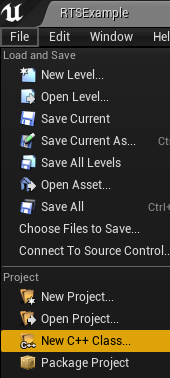
- Select Formation Component as parent
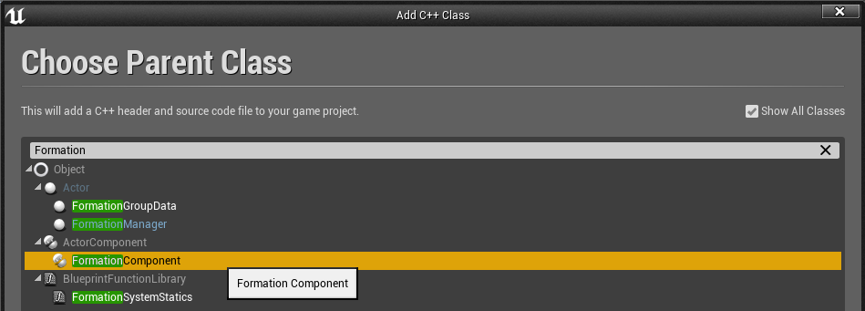
- Name your Component
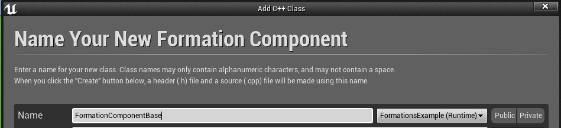
- In your code editor, open the .h file of your component
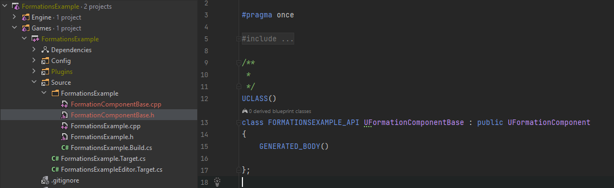
- Add the Blueprintable specifier to the UCLASS definition
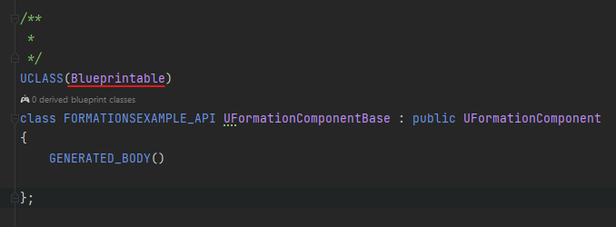
- Save, and Build your project. You may need to restart UE4 Editor now.
- Back in the Editor, create a new Blueprint Class and select your new class as the Parent.
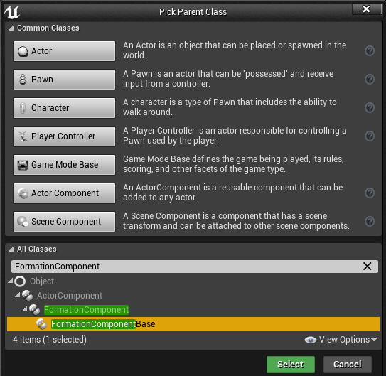
You can now use your new Blueprint component on your actors.
Class Reference
Formation System Statics
Contains static helper functions to get Formation System objects.
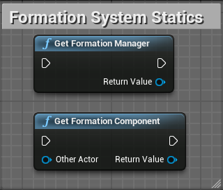
Get Formation Manager
Returns the Formation Manager in the current world context.
Get Formation Component
Returns the Formation Component for the specified other Actor.
Formation Component
The Formation Component is an Actor Component that can be put on any Actor that needs to be part of a group. It is the interface of how Actors
interact with the Formation System.
Properties
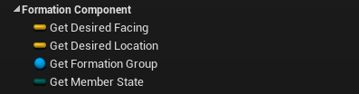
Desired Location
A Vector in world-space that represents where an Actor should move to.
Desired Facing
A Vector in world-space that represents the direction that an Actor should face. This can, for example, be passed to the "Rotate to Face BB Entry" behaviour tree task.
Member State
The current member state of the Actor within a group. (None, Member or Leader)
Formation Group
The current Formation Group that the Actor is a part of.
Methods
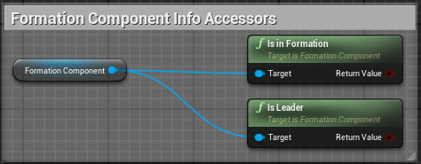
Is In Formation
Returns whether or not this Actor is in a Formation Group or not.
Is Leader
Returns whether or not this Actor is the Leader of their Formation Group.
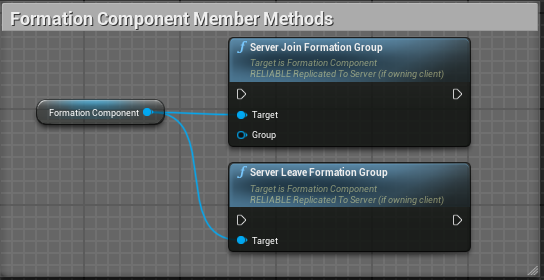
(Server) Join Formation Group
Adds the Actor to the specified Formation Group.
(Server) Leave Formation Group
Removes the Actor from their Formation Group.
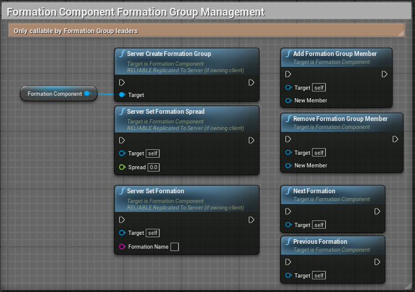
(Server) Create Formation Group
Creates a new Formation Group and sets this Actor as the Leader.
Add Formation Group Member *
Adds the specified Actor to this Actors Formation Group.
Remove Formation Group Member *
Removes the specified Actor from this Actors Formation Group.
(Server) Set Formation Spread *
Sets the spread of this Actors Formation Group. The spread is a multiplier of the spacing between Formation positions.
(Server) Set Formation *
Set the current Formation of this Actors Formation Group.
Next Formation *
Cycle the Actors Formation Groups current formation to the next Formation in the Formation list defined on the Formation Manager.
Previous Formation *
Cycle the Actors Formation Groups current formation to the previous Formation in the Formation list defined on the Formation Manager.
* These methods will only work for group leaders.
Events
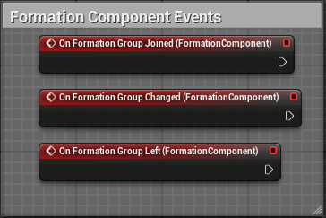
On Formation Group Joined
Fired when the Actor joins a Formation Group
On Formation Group Change
Fired when the Formation Group changes in any way - members joining or leaving, formation or spread changing, etc.
On Formation Group Left
Fired when the Actor leaves a Formation Group
Formation Group
A Formation Group handles calculation world-space positions for the group, and updating Formation Components.
Properties
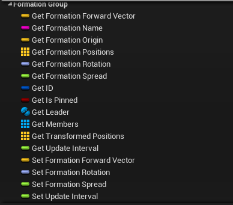
ID
A unique ID for this Group. This is assigned on group creation.
Formation Spread
The current spread of the group. This is a multiplier of the space between formation positions in the group.
Update Interval
This is the time is seconds between formation position updates.
IsPinned
Whether or not this group is pinned to a specific location.
Formation Origin
This is the position of the Formation Group.
Formation Forward Vector
The current forward vector of the Formation Group.
Formation Rotation
The current rotation of the Formation Group.
Formation Name
The current formation name of the Formation used by this group.
Leader
The Formation Component of the leader of this group.
Members
An array of the current members of this group.
Methods
Get ID
The the unique ID of this group.
Update Members
Force an update of the formation positions for this group. This happens on Tick at 'UpdateInterval' intervals,
but is provided if you need to disable tick for some reason, but still update formation positions.
Transform Formation Positions
Transforms Formation positions from relative coordinates to world coordinates as part of the Member update.
Fetch Formation Positions
Forces an update of the Formation position cache from the Formation Manager. You may need to do this if you manually change Formation positions at runtime.
Get Formation Name
Get the name of the current Formation.
Has Member
Returns a bool of whether or not an Actor is a member of this group.
Set Formation Name
Sets the current group Formation by name.
Set Formation Spread
The the group Formation Spread - a multiplier of the space between Formation positions.
Pin
Pins a group to a specific location, facing in a specific direction. A pinned group does not update to the Leader's location and will remain at
the pinned position until un-pinned.
UnPin
Un-pin a group. Once a group is un-pinned, it will align the Formation to the group leader, if there is one.
Set Leader
Sets the Leader of the group. If the Leader is not already a part of the group, they will be added to the group.
Add Member
Adds a new member to the group using their Actor. The actor must have a Formation Component.
Add Member Component
Adds a new member to the group using their Formation Component.
Remove Member
Remove a specific member from the group.
Remove Member Component
Remove a specific member from the group using their Formation Component.
Formation Manager
The Formation Manager is the Authority of the Formation System and is in charge of loading and managing Formations, and creating and managing Formation Groups.
Properties
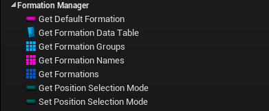
Default Formation
The name of the default Formation. New groups will use this Formation when created.
Formation Names
An array of all defined Formation names.
Formations
An array of all defined Formations.
Formation Groups
An array of all Formation Groups.
Position Selection Mode
The mode that group members will use to select their positions.
Position Selection Modes
- Ordinal - Members will use the same position as their index in the group. Eg. Member #1 will use Position #1.
- Closest - Members will pick the closest unclaimed position. Positions are claimed by members in ordinal order.
- FillClosest - Positions are assigned to the closest member who has not already been assigned a position.
Methods
Load
Load formations from a DataTable, specified by a content reference path. Example: TEXT("DataTable'/Game/FormationsExample/Data/Formations/FormationData.FormationData'")
Load Formation Data
Load formations from the specified DataTable.
Set Default Formation
Sets the default Formation that new groups will use when they are created.
Get Next Formation Name
Given a Formation name, gets the next Formation in the Formations list.
Get Previous Formation Name
Given a Formation name, gets the previous Formation in the Formations list.
Has Formation
Checks whether a Formation with the specified name exists.
Create Formation
Creates a new Formation with the given name.
Get Formation Positions
Returns the Formation positions for a specific Formation.
Set Formation Positions
Sets the Formation positions for a specific Formation.
New Formation Group
Creates a new empty Formation Group, pinned to the location and rotation represented by the specified transform.
Get Formation Group For Member
Returns the Formation Group for a specific Formation Component. If the Formation Component is not in a group, returns a null reference.
Get Formation Group
Returns the Formation Group with a specific ID.
Create Formation Group
Creates a new Formation Group and sets its Leader to the specified leader.
Add Formation Group Member
Adds a Formation Component to the specified group.
Remove Formation Group Member
Removes a Formation Component from the specified group.
Pin Formation Group
Pins a Formation Group to the location and rotation represented by the specified Transform.
UnPin Formation Group
UnPins a Formation Group.
Disband Formation Group
Disbands a Formation Group by removing all of its members, and removes the Formation Group.
Events
Formations Changed
Broadcasts whenever the Formation data changes
Formation Groups Changed
Broadcasts whenever the Formation Group data changes
Formation Manager Ready
Broadcasts when the Formation Manager has finished initialization, after BeginPlay, and is ready to be used.
Support
If you are having any issues with the plugin, or have any specific questions you can email codesquirl AT gmail.com.